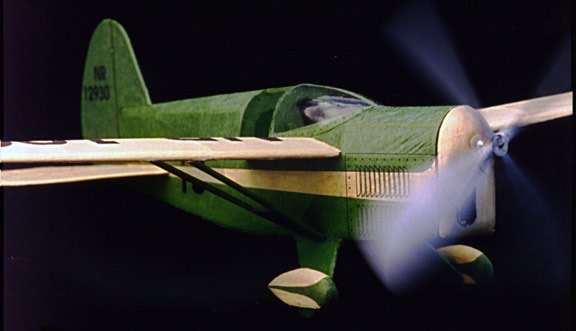
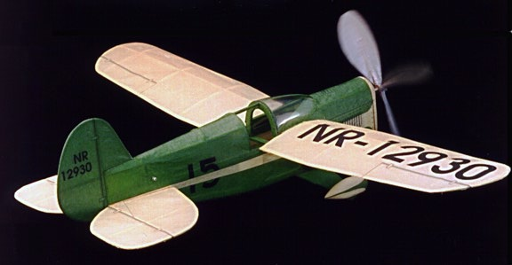

|  |
|---|
| This sporty green and yellow model is from the EasyBuilt kit for the Art Chester 1930's Racer. It is pretty close to Art Chester's Jeep, so I finished it as the Jeep was campaigned in 1933, its first racing season.
I laser printed the markings on both green and cream preshrunk Japanese tissue, then carefully pieced them together with about 1/16-inch overlap. Balanced and ready to fly weight is 9.7 gms without rubber. The wood 4-blade prop shown was soon replaced with a plastic prop, assembled by piecing together two Peck-Polymers props cut down to accommodate the short landing gear. Indoor flying times are around 35 seconds from ROG. I have since replaced the prop with a slightly larger 2-blade Peck prop. While this prevents ROG flying, it has pulled it to improved flights. I saw moderate success at the 2018 FAC Nats in Geneseo, advancing to the second heat of the Greve race against much larger models. Typical flight times now hover just under a minute. |
|  |
|
Copyright 1997-2019, Thayer Syme. All rights reserved |